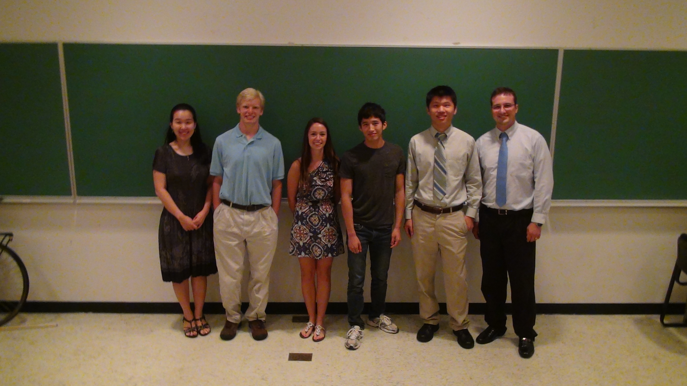
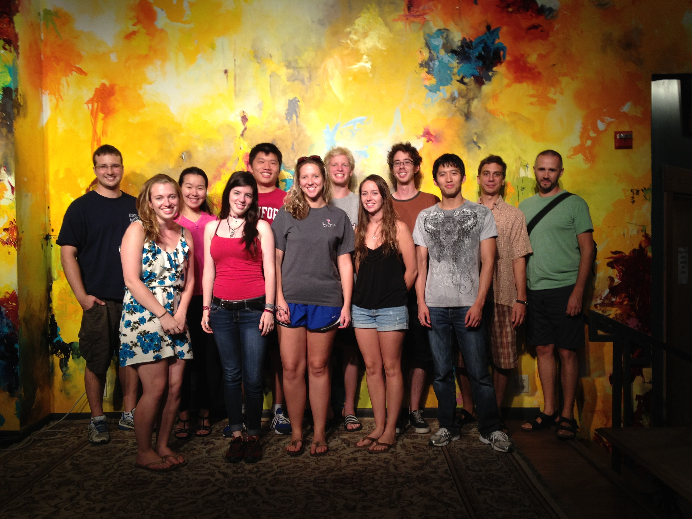

In the summer of 2012 Minah
Oh and I ran an REU
where we
worked on a problem in combinatorial linear algebra known as Rota's
Basis Conjecture.
The students we worked with were: Stephanie Bittner (Virginia
Wesleyan College), Michael Cheung (Elizabethtown College), Xuyi Guo
(Stanford University), and Adam Zweber (Carleton College).
Everyone worked extremely hard and after eight weeks we were
able
to come up with some nice results.

Left to right: Minah, Adam, Stephanie, Mike, Xuyi, Josh
Before describing the
students' work, here is one statement of
Rota's Basis Conjecture. Suppose you are given n bases of an
n-dimensional vector space. Additionally suppose that each
basis
is assigned a particular color: say the first basis is red,
the
second blue, etc. Then Rota's Basis Conjecture asserts that
one
can always repartition the multiset union of these bases into n
"rainbow" bases--that is, each new basis will contain exactly one
vector of each color. This innocent-looking conjecture has
been
open for over twenty years.

Both mathematics REU groups out for lunch (the other group was
supervised by Brant Jones
and Edwin O'Shea).
Adam, Stephanie, and Xuyi
defined and studied the "incidence
matrix of disjoint transversals." Specifically, suppose you
are
given n disjoint sets each of size n. Form a matrix with rows
and
columns indexed by the collection of transversals of these n sets.
Put a one in the (i,j)-entry if transversal i is disjoint
from
transversal j, otherwise put a zero. Aside from being an
interesting combinatorial object in its own right, this zero-one matrix
is very closely related to the n-dimensional case of Rota's Basis
Conjecture. The students managed to understand and
describe
several numerical invariants of this matrix, in particular its
eigenvalues and Smith normal form. See their full report here. [Update: see our final paper.]
Mike took a different approach to the problem, and spent most of the
summer working on a computer program that can prove Rota's Basis
Conjecture for any dimension. Actually, Rota's Basis
Conjecture
can be generalized to an analagous statement about n bases in a rank n
matroid, and Mike works in this full generality. The
generalized
Rota's Basis Conjecture was previously known to be true only for the
case n=3, and this summer Mike managed to prove the case n=4.
See
his full report here.
The students presented their work to the Department of Mathematics and
Statistics at JMU, see the videos/slides below:
Part 1 - Stephanie
Part 2 - Mike
Part 3 - Questions
Slides
Part 4 - Adam and Xuyi
Slides
Back to my homepage